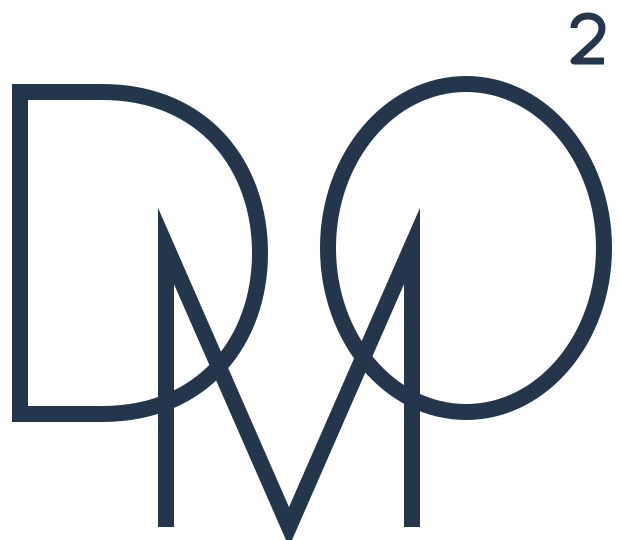
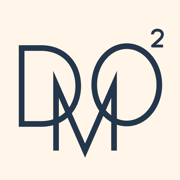

DOMO
디자인 전공생을 위한 AI 스튜디오. 평소에는 AI 한 명이 빠르게 답하고, 크리틱·컨셉·리서치·검증이 필요할 때만 팀이 함께 일합니다.
여러 AI가 매번 함께 답하면 느리고 비싸며, 서로에게 맞장구치는 동조가 생깁니다. 하지만 서로를 보지 않고 따로 만들거나, 다른 회사 모델이 교차 검증하거나, 기준표로 나눠 채점할 때는 팀이 확실히 낫습니다. DOMO는 그 순간에만 팀을 부르고, 정말 나은지는 블라인드 비교로 직접 확인합니다.
일반 질문, 글 다듬기, 일정 정리
크리틱, 컨셉, 리서치, 사실 검증
입력창에 명령을 붙이거나 팀 서비스 버튼을 누르면 됩니다.
/크리틱크리틱 리허설작업물과 교수님 기준표를 주면 교수·사용자·디테일 시점이 따로 채점하고, 고칠 점 세 가지와 예상 질문을 정리합니다.
/컨셉컨셉 3안내 1차 가설에서 출발해 확장·반박·와일드카드 세 방향을 만들고, 내 기준으로 채점한 결정 카드를 줍니다.
/리서치데스크리서치측정·파생·미확인 라벨과 출처가 붙은 팩트시트를 만들고, 다른 회사 모델이 교차 검증합니다.
/비교1명 vs 팀 블라인드 비교같은 요청을 두 방식으로 받아 누가 썼는지 모르게 고릅니다. 결과는 유형별 승률로 쌓입니다.
대화에서 나온 과제·프로젝트·내 기준은 자동으로 기억되고, 반복되는 작업은 스킬로 자동 등록됩니다.
앱을 내려받아 열고, 버튼을 눌러 본인 Claude·ChatGPT 계정으로 로그인하면 끝입니다. 터미널은 필요 없어요. 로그인 정보는 각 공식 앱이 내 컴퓨터 안에서만 관리하고, DOMO는 AI 계정 정보를 보관하지 않습니다.
Claude는 유료 구독(Pro·Max)이 필요합니다. Codex(ChatGPT)는 선택이에요. 이전 버전 보기
DOMO는 컴퓨터에 설치하는 앱이에요. 이 페이지를 컴퓨터에서 열어 내려받은 뒤, 폰에서는 설치한 DOMO에 접속해서 씁니다.
DOMO는 개인이 만든 무료 앱이라 처음 열 때 확인 창이 뜹니다. 아래대로 한 번만 넘기면 다음부터는 바로 열려요.
브라우저가 "일반적으로 다운로드되지 않는 파일"이라고 하면 "유지"를 선택하세요.
이어서 나타나는 "실행" 버튼을 누르면 설치되고 DOMO가 열립니다.
브라우저에 열린 창에서 본인 계정으로 로그인하면 자동으로 넘어갑니다.
"Apple은 'DOMO'에 … 악성 코드가 없음을 확인할 수 없습니다"라는 창이 뜹니다. 고장이 아니라 Apple에 유료 등록을 하지 않은 앱에 공통으로 뜨는 안내예요. "완료"를 누르세요. ("휴지통으로 이동"은 누르지 마세요.)
화면 아래쪽 보안 항목에 DOMO가 보입니다. "그래도 열기"를 누르고 Mac 암호를 입력하면 열립니다.
브라우저에 열린 창에서 본인 계정으로 로그인하면 자동으로 넘어갑니다.
브라우저로 http://localhost:3939 를 열면 회원가입 화면이 나오고, AI 연결은 같은 버튼으로 진행합니다. 설치 없이 써 보려면 GitHub Codespaces에서 열 수도 있어요.